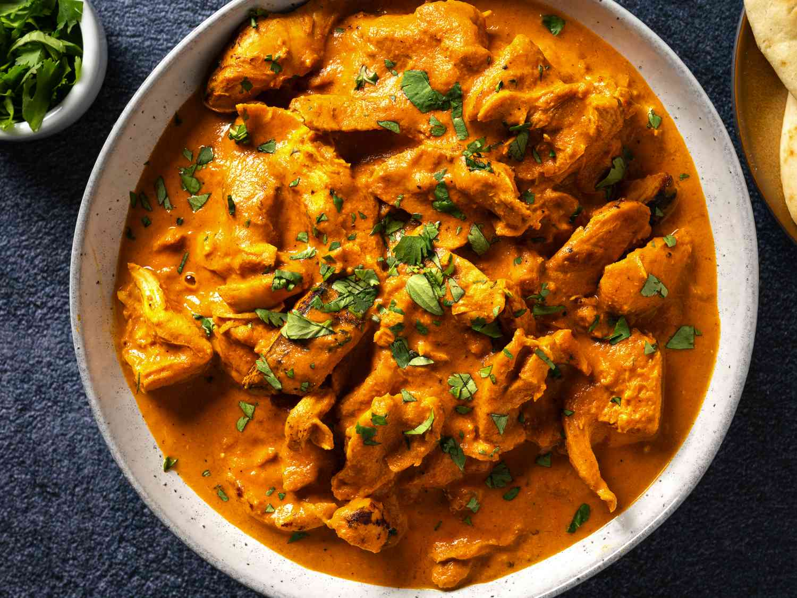

When I first learned how to make tikka masala sauce, my culinary life was forever changed. Indian cuisine is so flavorful and filling that my family can never get enough.
It is important to note that curries like tikka masala have been correlated to premature heart disease, especially in those already predisposed to the illness. Be careful how often you make foods with this much saturated fat content!